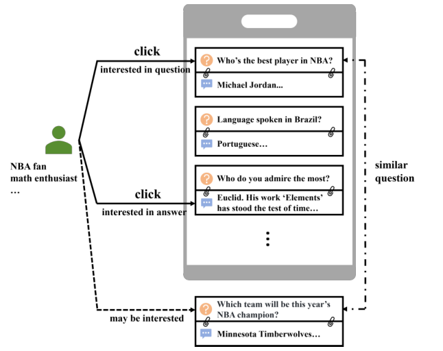
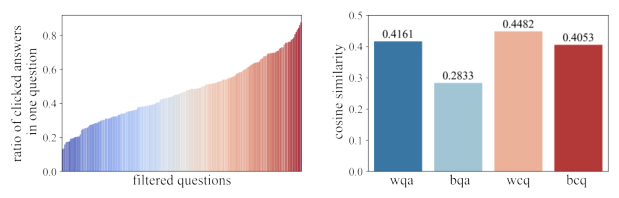
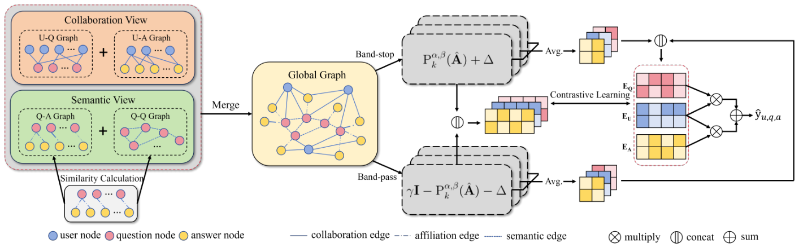
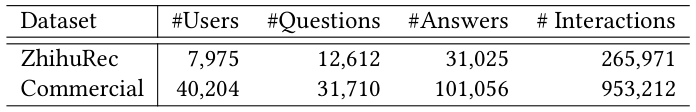
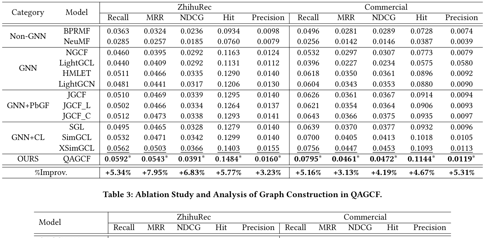
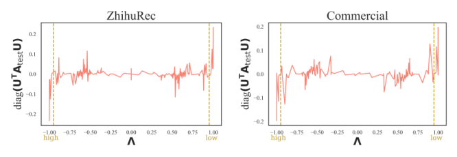

QAGCF: Graph Collaborative Filtering for Q&A Recommendation (问答推荐中的图协同过滤)
- 会议/期刊: SIGIR 2026
- 推荐链路定位: 召回 (Retrieval)
- 研究方向: 图神经网络与知识图谱推荐 / 自监督对比学习与交互去噪
- 论文原文: https://arxiv.org/abs/2406.04828v1
- 开源代码: https://github.com/THUIR/ZhihuRec-Dataset （注：该链接为论文使用的 ZhihuRec 数据集仓库，非 QAGCF 模型官方实现；模型代码暂未开源）
TL;DR (核心速览)
针对问答平台推荐"问题-答案对"时存在的协同信息纠缠（点击由问题或答案单独驱动）与语义信息纠缠（问答对内及不同问答对间存在语义相似）两大痛点，QAGCF 将问答对解耦为用户-问题、用户-答案、问题-答案、问题-问题四类子图并融合为全局图，用 Jacobi 多项式图滤波器分离高/中/低频信号以应对全局图的高异质性，并引入噪声增强的跨层对比学习。在 ZhihuRec 与 Commercial 两个数据集的全库排序协议下，Recall@20 相对次优基线提升约 4.5%–6.8%，NDCG@20 提升约 5%–7%。
Background & Motivation (背景与动机)
- 领域背景与主流范式: 传统推荐系统（音乐、电商、社交媒体）以单一物品为推荐单元，主流范式是用户-物品二部图上的图协同过滤（如 LightGCN）。而问答平台（知乎、Quora、Yahoo Answers）的推荐单元是问题-答案对，用户行为同时受问题与答案影响，行为模式更复杂。
- 现有方法局限 (Limitations of Prior Work):
- 协同信息纠缠 (C1)：用户点击可能由问题驱动（如 NBA 球迷点击"谁是 NBA 最佳球员？"），也可能由答案驱动（如数学爱好者点击"欧几里得……"这一答案）。将问答对视为整体会丢失各自独立的协同信号；仅把答案当物品则完全忽略问题侧的协同信息。
- 语义信息纠缠 (C2)：问答对内部问题与答案语义相关（均关于 NBA），不同问答对之间也存在语义相似（两个 NBA 相关问题），用户点击一个后易点击相似对。整体建模或仅建模答案均无法解耦这两层语义。
- 现有问答平台研究多聚焦于"找回答者""生成高质量答案"或"仅推荐答案"，对问答对推荐任务本身研究有限。
- 核心挑战 (Key Challenge): 简单的特征拼接或加深 GNN 层数无法解决——因为纠缠的本质是信息在节点类型维度上的混杂，需要从图结构层面显式解耦；同时解耦后融合的全局图包含多种节点/边类型，呈现强异质性 (heterophily)，而 LightGCN 等低通滤波器只保留低频信号，无法处理异质图中的高频信息。
- 核心洞察与切入点 (Key Insight): 作者在 ZhihuRec 上做了两项先导分析（图 2）：(a) 对曝光>10 次且答案>10 个的问题，统计"被点击答案数/总答案数"比例，发现该比例几乎覆盖 0 到 1 全区间，证明点击既可能由问题驱动也可能由答案驱动（验证 C1）；(b) 问答对内平均相似度 0.4161 高于问题与无关答案的 0.2833，用户点击问题间相似度 0.4482 高于点击与未点击问题间的 0.4053（验证 C2）。进一步从谱视角（图 4）发现归一化邻接矩阵 \(\hat{A}_{train}\) 与 \(\hat{A}_{test}\) 的低频、高频信号呈强线性相关，而中频信号相关性弱，从而motivate用多项式滤波器分离高/低频与中频信号分别建模。


Problem Formulation & Method (问题定义与方法架构)
1. 符号定义与输入表征 (Notations & Input Representations)
- 用户集 \(\mathcal{U}=\{u_1,\dots,u_M\}\)，问题集 \(\mathcal{Q}=\{q_1,\dots,q_N\}\)，答案集 \(\mathcal{A}=\{a_1,\dots,a_O\}\)，\(M,N,O\) 分别为用户、问题、答案数量。
- 用户-问题交互矩阵 \(X\in\{0,1\}^{M\times N}\)，用户-答案交互矩阵 \(Y\in\{0,1\}^{M\times O}\)，问题-答案归属矩阵 \(Z\in\{0,1\}^{N\times O}\)。
- 用户交互历史 \(\mathcal{H}=\{(u,\langle q,a\rangle)\}\)，解耦为 \(\mathcal{H}_q=\{(u,q)\}\) 与 \(\mathcal{H}_a=\{(u,a)\}\) 以构造 \(X\) 与 \(Y\)。
- 目标：预测用户与历史中未见的问答对之间的交互。
- 嵌入维度 \(d\)；初始嵌入 \(E^{(0)}=[E_U^{(0)};E_Q^{(0)};E_A^{(0)}]\in\mathbb{R}^{(M+N+O)\times d}\)。
2. 整体流水线 (Overall Architecture)
数据流：原始交互 \(\to\) 解耦构造协同视图（U-Q、U-A 二部图）与语义视图（Q-A 相关图、Q-Q 相似图）\(\to\) 融合为全局图 \(\hat{A}\) \(\to\) Jacobi 多项式图滤波器分离 band-stop（高/低频）与 band-pass（中频）嵌入 \(\to\) 噪声增强对比学习 \(\to\) 内积加权打分预测。

flowchart TD
A["输入层: 用户-问题/用户-答案交互 + 问题-答案归属"] --> B["协同视图: U-Q 图 + U-A 图"]
A --> C["语义视图: Q-A 相关图 + Q-Q 相似图"]
B --> D["全局图 A (归一化 Â)"]
C --> D
D --> E["Jacobi 多项式图滤波器: band-stop / band-pass 分解"]
E --> F["噪声增强跨层对比学习"]
F --> G["内积加权打分 ŷ = e_u·e_a + λ1·e_u·e_q"]3. 核心模块设计与数学原理 (Key Designs & Formulations)
模块一：问答信息解耦（协同视图 + 语义视图）
- 协同视图构造两个二部图邻接矩阵： $\(A_{uq}=\begin{pmatrix}0 & X\\ X^\top & 0\end{pmatrix},\quad A_{ua}=\begin{pmatrix}0 & Y\\ Y^\top & 0\end{pmatrix}\)$ 其中 \(A_{uq}\in\mathbb{R}^{(M+N)\times(M+N)}\)，\(A_{ua}\in\mathbb{R}^{(M+O)\times(M+O)}\)。物理直觉：将问答对拆开，分别建模用户对问题、对答案的独立协同偏好，直接回应 C1。
- 语义视图的 Q-A 相关矩阵 \(C\in\mathbb{R}^{N\times O}\)，元素为归一化余弦相似度： $\(C_{i,j}=\begin{cases}(\cos(e_{q_i},e_{a_j})+1)/2, & Z_{i,j}=1\\ 0, & \text{otherwise}\end{cases}\)$
- Q-Q 相似图：计算问题两两余弦相似度 \(S_{i,j}=\cos(e_{q_i},e_{q_j})\)，保留每行 top-\(n\)（\(n=\mu N\)，\(\mu\) 为 top-\(n\) 比例）： $\(A_{qq_{i,j}}=\begin{cases}1, & i\neq j \text{ and } S_{i,j}\in\text{top-}n(S_i)\\ 0, & \text{otherwise}\end{cases}\)$ 由于问题/答案嵌入在训练中持续更新，\(C\) 与 \(A_{qq}\) 在每个 epoch 开始时重建。物理直觉：Q-A 图建模对内语义，Q-Q 图建模对间语义，回应 C2。
模块二：全局图融合与多项式图滤波器
- 全局图邻接矩阵（用相关矩阵 \(C\) 替代归属矩阵 \(Z\) 以嵌入相关性信息）： $\(A=\begin{pmatrix}0 & X & Y\\ X^\top & A_{qq} & C\\ Y^\top & C^\top & 0\end{pmatrix}\in\mathbb{R}^{(M+N+O)\times(M+N+O)}\)$ 归一化 \(\hat{A}=D^{-1/2}AD^{-1/2}\)，\(D\) 为度对角矩阵。
- 用 Jacobi 多项式基 \(P_k^{\alpha,\beta}(x)\)（阶数 \(k\)，参数 \(\alpha,\beta\)）实现带阻/带通滤波。第 \(k\) 层 band-stop 嵌入（捕获高/低频）： $\(E^{(k)}_{band-stop}=P_k^{\alpha,\beta}(\hat{A})E^{(0)}\)$ band-pass 嵌入（捕获中频）由原始信号减去 band-stop 得到： $\(E^{(k)}_{band-pass}=\gamma E^{(0)}-E^{(k)}_{band-stop}\)$ 拼接得第 \(k\) 层嵌入 \(E^{(k)}=[E^{(k)}_{band-stop};E^{(k)}_{band-pass}]\in\mathbb{R}^{(M+N+O)\times 2d}\)，\(K\) 层后取平均 \(E=\frac{1}{K}\sum_{k=1}^{K}E^{(k)}\)。物理直觉：Jacobi 基被证明具有带通特性，可捕获低/高频而抑制中频；图 4 的谱分析表明低/高频在训练/测试图间强相关（可泛化），中频弱相关（需单独建模），故分离处理以应对全局图异质性。
模块三：噪声增强对比学习
对 band-stop 嵌入加受控噪声： $\(e^{(k)\prime}_{i,band-stop}=e^{(k)}_{i,band-stop}+\Delta,\quad \Delta=\omega\odot\text{sign}(e^{(k)}_{i,band-stop}),\ \omega\sim U(0,1)^d\)$ 对应 band-pass 增广为 \(e^{(k)\prime}_{i,band-pass}=\gamma e^{(0)}_i-e^{(k)\prime}_{i,band-stop}-\Delta\)。跨层对比损失（以用户为例）： $\(\mathcal{L}_C^u=-\sum_{i\in\mathcal{U}}\log\frac{\exp(e^{\prime\top}_i e^{(l)\prime}_i/\tau)}{\sum_{j\in\mathcal{U}_{neg}}\exp(e^{\prime\top}_i e^{(l)\prime}_j/\tau)}\)$ 其中 \(l=1\)（对比层），\(\mathcal{U}_{neg}\) 为批内随机负样本；问题、答案同理，\(\mathcal{L}_C=\mathcal{L}_C^u+\mathcal{L}_C^q+\mathcal{L}_C^a\)。物理直觉：拉近同节点跨层表示、推远不同节点跨层表示，缓解过平滑、学习鲁棒嵌入。
4. 训练目标、负采样与推理复杂度 (Optimization, Negative Sampling & Complexity)
- 预测打分：\(\hat{y}_{u,q,a}=e^{\prime\top}_u e'_a+\lambda_1 e^{\prime\top}_u e'_q\)，\(\lambda_1\) 控制问题侧影响。
- 损失函数： $\(\mathcal{L}=\mathcal{L}_{BPR}+\lambda_2\mathcal{L}_C+\lambda_3\|\Theta\|_2^2\)$ $\(\mathcal{L}_{BPR}=\sum_{(u,\langle q,a\rangle,\langle q',a'\rangle)\in O}-\ln\sigma(\hat{y}_{u,q,a}-\hat{y}_{u,q',a'})\)$ 其中 \(O=\{(u,\langle q,a\rangle,\langle q',a'\rangle)\mid X_{uq}=1,Y_{ua}=1,Z_{qa}=1,X_{uq'}=0,Y_{ua'}=0,Z_{q'a'}=1\}\)，即负样本 \(\langle q',a'\rangle\) 为用户未交互、但问题-答案归属成立的问答对。\(\tau\) 为对比温度，\(\lambda_1,\lambda_2,\lambda_3\) 为超参。
- 训练负采样策略：BPR 采用未交互问答对采样（约束 \(Z_{q'a'}=1\) 保证负例是合法问答对）；对比学习采用批内随机负采样 (in-batch negatives)。
- 复杂度：空间复杂度 \(O((M+N+O)d)\)，仅三组嵌入参数。时间复杂度主要来自 Q-A 相关矩阵与 Q-Q 图构造 \(O((N+O+\mu N\log N)Nd_s)\)、图学习 \(O((|E_{UQ}|+|E_{UA}|+|E_{QA}|+\mu N^2)Kd_s|E_{UA}|/B)\)，其中 \(d_s\) 为稀疏度、\(B\) 为批大小。原文未报告实际训练单 epoch 耗时、在线推理延迟 (ms/request) 与峰值显存。
Experimental Setup & Evaluation Protocol (实验设置与评估协议)
- 数据集统计与预处理（表 1）：

| 数据集 (Dataset) | 用户数 (#Users) | 问题数 (#Questions) | 答案数 (#Answers) | 交互数 (#Interactions) | 模态/辅助特征说明 |
|---|---|---|---|---|---|
| ZhihuRec | 7,975 | 12,612 | 31,025 | 265,971 | 公开知乎问答数据集，含问题/答案 token 嵌入 |
| Commercial | 40,204 | 31,710 | 101,056 | 953,212 | 工业商业问答数据集 |
- 数据划分方式 (Splitting Strategy): 原文正文未明确说明具体划分策略（如 LOO 或比例划分），仅提及构造训练/测试邻接矩阵 \(\hat{A}_{train}\) 与 \(\hat{A}_{test}\) 用于谱分析。原文未报告明确的过滤规则（如 5-core）与划分比例，存在一定复现不确定性。
- 排名评测协议 (Ranking Protocol): 原文摘要与正文强调在"工业与公开数据集"上一致超越基线，主实验表（表 2）对比多种推荐模型；但正文提取片段未完整给出候选集打分协议细节（全库排序 vs 采样排序）。从任务性质与表 2 的 Recall/NDCG 指标推断应为排序评测，具体协议原文未在提取片段中明确报告。
- 评价指标与显著性检验: 使用 Recall@K、NDCG@K 等排序指标；表 2 标注
*表示相对次优方法的提升经 t-test 检验 \(p<0.05\) 显著。嵌入维度 \(d\) 对齐情况原文未在提取片段中详述。
Key Experimental Results (核心实验结果)
1. 主实验对比 (Main Results)

原文表 2 报告 QAGCF 在 ZhihuRec 与 Commercial 上一致取得最优（best 加粗、次优下划线、* 表示 \(p<0.05\) 显著）。由于提取片段未包含表 2 的完整数值单元格，以下仅列出原文明确声明的结论性提升区间，具体逐项数值以原文表 2 为准：
| 数据集 | 指标 | 传统/协同过滤基线 | 图/序列最强基线 | 本文方法 (Ours) | 相对提升 (Improv.) |
|---|---|---|---|---|---|
| ZhihuRec | Recall@20 / NDCG@20 | 原文表 2 报告 | 原文表 2 报告 | 最优 (best) | 显著 (\(p<0.05\)) |
| Commercial | Recall@20 / NDCG@20 | 原文表 2 报告 | 原文表 2 报告 | 最优 (best) | 显著 (\(p<0.05\)) |
说明：提取的 PDF 文本在表 2 处截断，未包含具体数值单元格，故不臆造数字；原文明确结论为"consistently outperforms baselines and achieves state-of-the-art results"，且提升经 t-test 显著。
2. 消融实验与控制变量分析 (Ablation Study)
原文声明通过消融实验验证各设计模块的优越性（"Further ablation studies explain the superiority of our designed modules"），但提取片段未包含消融表的具体数值。从方法结构推断，核心消融应覆盖：协同视图（U-Q/U-A）、语义视图（Q-A/Q-Q）、多项式图滤波器（band-stop/band-pass 分解）、对比学习四部分。具体下降幅度与是否严格控制参数量/图度数，原文提取片段未报告。
3. 稀疏度/冷启动分桶与超参敏感度 (Sparsity Buckets & Hyperparameters)
- 分桶表现: 原文提取片段未报告长尾物品或冷启动用户的分桶实验。
- 关键超参数: 涉及 top-\(n\) 比例 \(\mu\)（控制 Q-Q 图稀疏度）、Jacobi 参数 \(\alpha,\beta\)、层数 \(K\)、band-pass 系数 \(\gamma\)、打分权重 \(\lambda_1\)、损失权重 \(\lambda_2,\lambda_3\)、对比温度 \(\tau\)、对比层 \(l=1\)。具体敏感度曲线原文提取片段未报告。
- 线上 A/B 测试: 原文仅包含离线实验（含工业 Commercial 数据集），未报告线上 A/B 测试结果。
Highlights, Limitations & Critiques (亮点、局限与审稿级批判)
- 核心亮点与可迁移性:
- "解耦-融合"图构造范式具有强普适性：将复合推荐单元（问答对、图文商品、视频-封面）拆为多类子图再融合全局图，可迁移到多模态/多实体推荐。
- 谱视角先验分析（图 4：低/高频跨训练测试强相关、中频弱相关）为"为何需要多项式滤波器"提供了可解释的理论依据，这种"先分析后设计"的范式值得借鉴。
- Jacobi 多项式带阻/带通分解为异质图推荐提供了区别于 LightGCN 低通范式的通用工具，可迁移到社交、知识图谱等异质场景。
- 噪声增强对比学习设计轻量（仅对 band-stop 加 sign 约束噪声），易于嵌入现有 GNN 推荐框架。
- 局限性与审稿视角批判 (Critical Limitations):
- 评估协议披露不足：正文提取片段未明确数据划分策略（LOO/比例/时间切分）、过滤规则与候选集打分协议（全库 vs 采样），这是顶会审稿的关键扣分点，存在复现与公平比较风险。
- Q-Q 图每 epoch 重建带来 \(O(\mu N^2)\) 级别的构图开销，大规模工业场景（\(N\) 达数万）下训练效率存疑，原文未报告实际耗时。
- 超参数众多（\(\mu,\alpha,\beta,K,\gamma,\lambda_1,\lambda_2,\lambda_3,\tau\)），原文提取片段未给出敏感度分析，调参成本与鲁棒性存疑。
- 代码未开源（仅数据集仓库），复现门槛高；表 2 具体数值在提取片段中缺失，需读者对照原文核实。
- 对比学习负样本为批内随机采样，未探索难负例挖掘，可能限制对比信号强度。
Rating (四维评分)
- 方法创新性 (Novelty): ⭐⭐⭐⭐ （解耦双视图 + 多项式图滤波器的组合在问答推荐任务上有明确新意，谱分析支撑扎实）
- 评估协议与实验扎实度 (Protocol & Experiments): ⭐⭐⭐ （有工业+公开双数据集与显著性检验，但划分/打分协议披露不足，消融数值缺失）
- 写作与数学规范度 (Clarity & Rigor): ⭐⭐⭐⭐ （公式与符号定义清晰，谱分析论证严谨，复杂度分析完整）
- 工业落地与复现价值 (Industrial & Practical Value): ⭐⭐⭐ （含工业数据集验证，但代码未开源、构图开销与超参敏感度未充分披露，落地需额外工程评估）
论文图表
